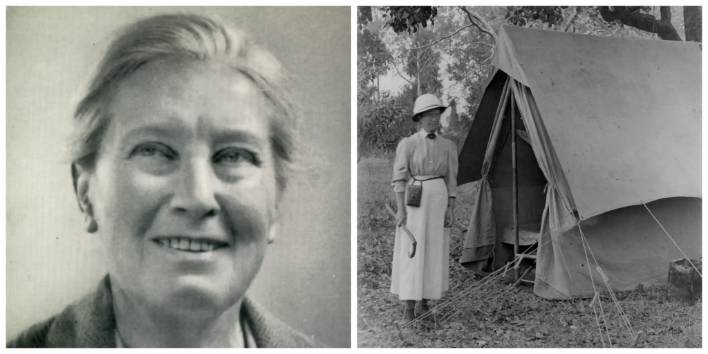
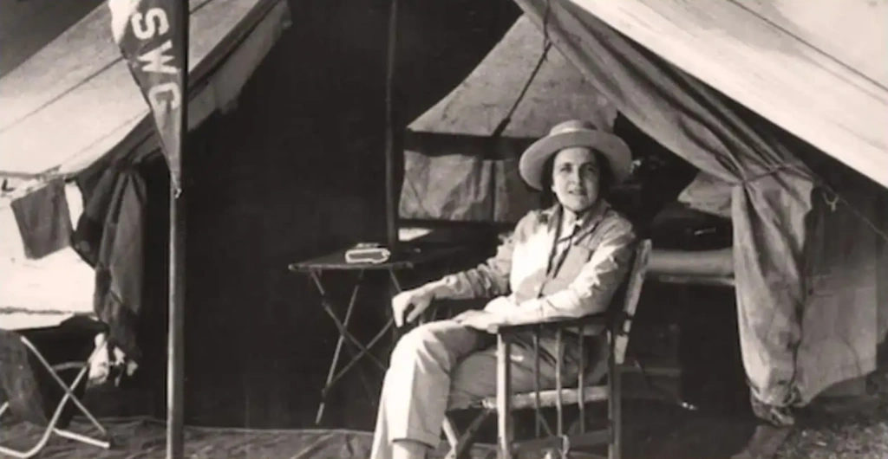
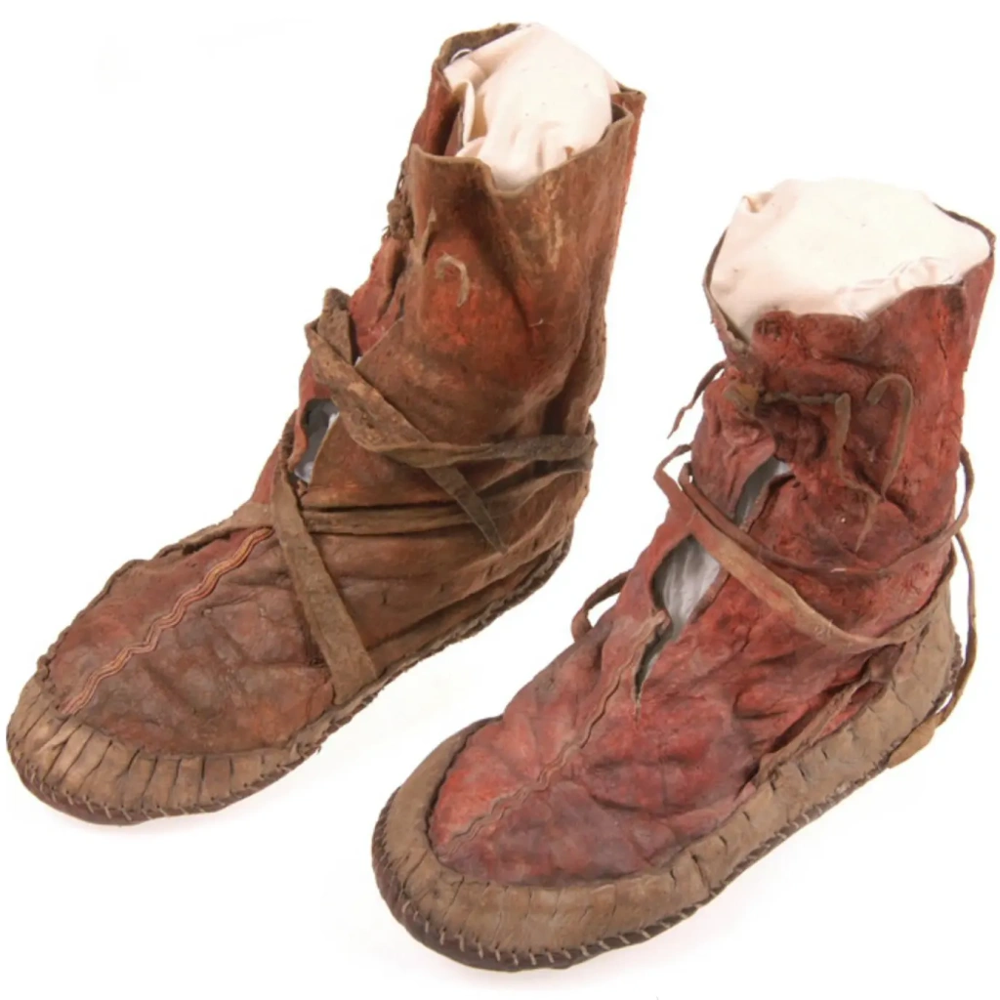
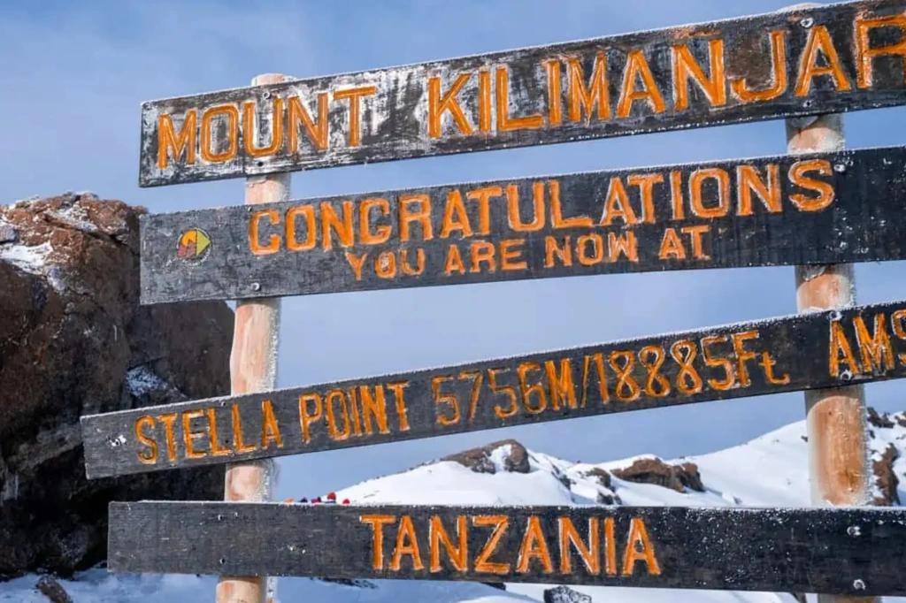
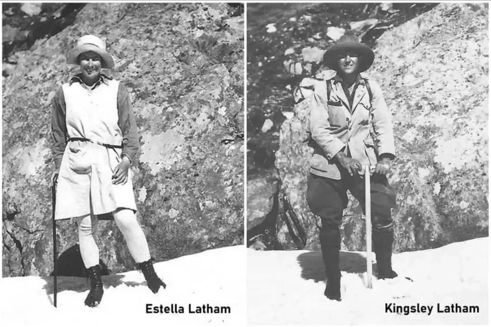
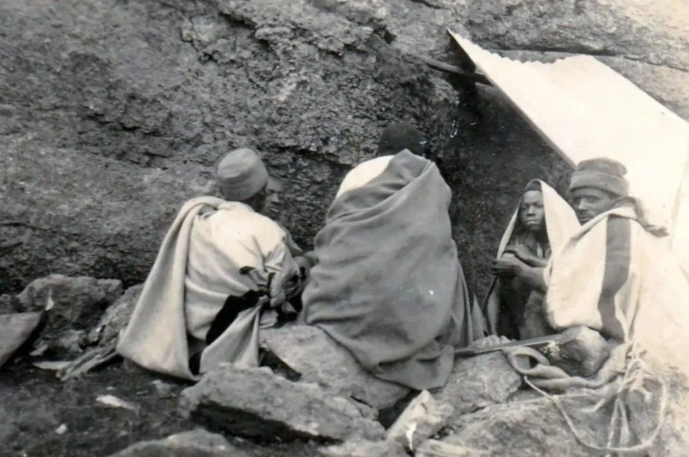
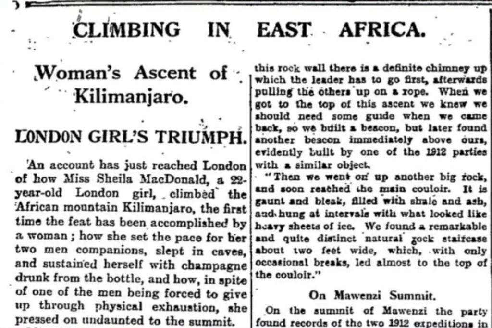
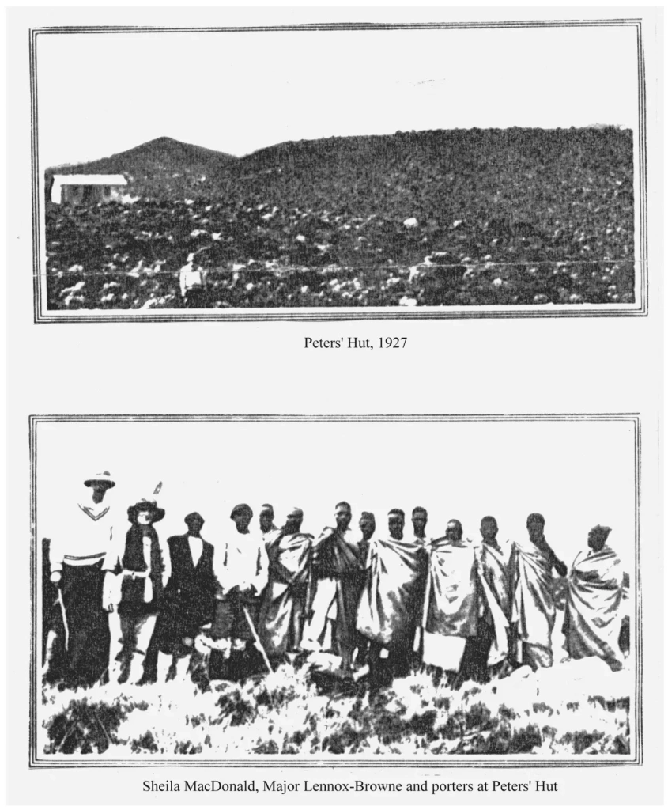
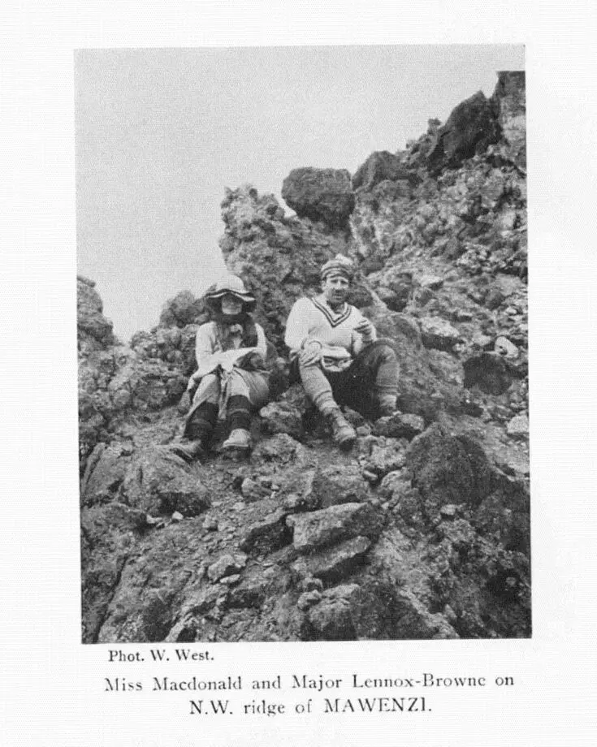

Climbing
Climbing The stories of women on early Kilimanjaro expeditions are truly remarkable. Those brave climbers faced tough challenges, from harsh weather to the high altitude of Africa’s tallest peak. Join us as we explore their inspiring journeys and the impact they made.
Who was the first woman who climbed Kilimanjaro?
The first woman to climb the highest summit of Kilimanjaro was Sheila MacDonald. She reached the in 1927, making history as the very first female climber to achieve this feat. Her ascent paved the way for future generations of women in mountaineering.
Was Sheila MacDonald the first female climber on Kilimanjaro?
Despite Sheila being the first female conqueror of Uhuru Peak, the names Gertrude Benham, Clara Ruckteschell-Truëb, and Estella Latham are also frequently mentioned in various sources. Why are they often cited as the first women to conquer the Roof of Africa? In our article, you'll meet these trailblazing women and uncover their bravery, persistence, and contributions to conquering the highest peak in Africa.
Was Gertrude Emily Benham the first woman to reach Kaiser Wilhelm Peak?
The main peak of Mount Kilimanjaro—Uhuru—stands at 5,895 meters (19,340 feet) above sea level. Imagine 19 Eiffel Towers or seven Burj Khalifas stacked on top of each other—that’s the height of Africa's tallest mountain. Climbing it requires not only physical strength and endurance but also proper gear. In the early 19th century, there were no specialized suits or footwear for such a trek. Additionally, the mountain’s landscape looked very different back then. A significant portion of Kilimanjaro was covered in snow and glaciers, making it a much more dangerous climb than it is today.
Despite all the obstacles, it wasn't just strong and brave men who were determined to conquer Africa's highest peak; courageous women also took on the challenge. One of the first was Gertrude Benham.

Gertrude was born in London as the youngest of six children to master ironmonger Frederick Benham and his wife, Emily. From a young age, she accompanied her father on summer trips to the Alps, and by the age of 20, she had become a seasoned mountaineer, having completed over 130 ascents, including Mont Blanc and the Matterhorn. Gertrude was also an intrepid traveler, walking from Valparaíso, Chile, to Buenos Aires, Argentina, and trekking nearly the entire length of Africa. Along the way, she created numerous sketches, which were later used in mapping various countries.
In 1916, Benham became a member of . But even before that, she was among the first women to make a bold attempt to conquer Mount Kilimanjaro. Her ascent in 1909 should have secured her a place in the record books, according to many researchers. However, when it comes to the history of Kilimanjaro climbs, her name is rarely mentioned.
In 1909, Gertrude Benham journeyed to Africa. After arriving in Broken Hill (now Kabwe in central Zambia), she walked 900 kilometers (560 miles) to Abercorn (now Mbala in Zambia). From there, she traveled on to Uganda and Kenya. In Nairobi, Kenya's capital, she took a train to the town of Voi, and from there, she made her way through Tsavo National Park to Moshi, where she found guides for her ascent of Kilimanjaro.

Gertrude was accompanied by five porters, two guides, and a cook. They set up their first camp at an altitude of 3,050 meters (10,000 feet), right beyond the forest boundary. Leaving most of the luggage in a tent, Benham and her team continued their journey.
The porters carried firewood and blankets until, two hours later, they stumbled upon the skeletons of two members from a previous expedition—apparently, they had died from exposure. This chilling discovery left a lasting impression on the team. The local guides, convinced this was a sign of evil spirits, refused to continue the climb. Despite Benham's attempts to persuade them with arguments, threats, and bribes, they remained steadfast. So, Benham shouldered the bags herself and set off. Only the cook and two porters chose to follow her, while the rest stayed behind to guard the camp.
Gertrude reached the snow line and found an ice cave, which was the site where the previous expedition had set up camp. One of the porters collected some snow, intending to show it to his friends and family back home. However, when the snow instantly melted from the heat of the fire, the guides became even more convinced that witchcraft was at play. This time, all of them refused to go any further.
After spending the night in the ice cave, Benham continued her journey alone the next morning. She reached an altitude of 4,880 meters (16,010 feet) and found herself on a glacier covered with drifting snow. By 2:00 PM, she had reached the edge of the crater. She cautiously peered inside, trying to step on rocks rather than the snow, which could be unstable.
According to her account, the summit of Kilimanjaro was slightly "to the left." However, since she didn’t see a clear height difference and the snow slope was too steep, Gertrude decided to turn back. She navigated by compass through thick fog, following her markings, and successfully found her way back to the camp in the ice cave.

Even though Gertrude Benham was the first female climber to attempt such a high ascent of Kilimanjaro, she did not reach the main summit of the Kibo volcano—Kaiser Wilhelm Peak. According to her biographer, Raymond John Howgego, Benham reached the summit of Mawenzi, the second-highest peak of Kilimanjaro. This is where the serious discrepancies start.
The problem is that the primary source of information about Benham's Kilimanjaro ascent is Howgego's A ‘Very Quiet and harmless traveller’: a biography of Gertrude Emily Benham 1867-1938. According to this book, Gertrude reached the edge of the Kibo Crater, a point later named Gilman's Point. From there, the highest peak on Kilimanjaro might be visible slightly "to the left."
Howgego's claim that Benham ascended Mawenzi is evidently incorrect. This inaccurate assumption likely stems from the author’s unfamiliarity with the location of the second-highest peak relative to Kibo. He may not have been aware of the local landscape and thus failed to recognize that the described journey does not resemble an ascent of Mawenzi.
Who was the second woman to reach Gilman's Point?
Clara Truëb, also known as Clara Ruckteschell-Truëb, was a Swiss craftswoman and sculptor. She married Walter von Ruckteschell, and together they ascended Mount Kilimanjaro in 1914.
Clara was born in Basel and moved to Munich with her sister Margaret in 1904. She studied at the Debschitz School (Instructional and Trial Workshops for Applied and Fine Art) and worked as a ceramist and sculptor. It was there that she met her future husband, Walter, and the couple soon married.
In November 1913, the Ruckteschells traveled to German East Africa with their college friend from Munich, Swiss artist Karl von Salis. On February 13, 1914, along with Salis, the Ruckteschells ascended to one of the peaks of Kibo—the main crater of Kilimanjaro.
The couple reached the crater on the eastern slope, climbing to what is now known as Gilman's Point, making Clara one of the first women to successfully reach the edge of Kibo. This is a notable stopping point on the route to the summit, where climbers can rest and take in the surroundings. The Marangu and Rongai routes pass through this point, and it's about a two-hour hike to the summit from there.
How did Stella Point get its name?
Stella Point is one of the highest points on the edge of the Kibo Crater, situated between the peak now known as Uhuru and Gilman's Point. It is the final stop for those aiming for the summit, which is still about an hour away. Interestingly, the historical marker for Stella Point does not align with the current location of the informational sign. There is an elevation difference of 11 meters (35 feet) between them.
The sign indicates an elevation of 5,756 meters (18,885 feet), which is accurate. However, the actual rocky summit of Stella Point is slightly lower, at an elevation of 5,745 meters (18,880 feet).

The heroine of this story, Estella Latham—known as Stella, the name she preferred—was born in the Irish town of Youghal in 1901. After the early death of her parents, she was raised by her sister Kathleen. So, what drove this woman to summit Kilimanjaro, and what is her connection to Stella Point?
Stella's passion for gardening brought her to South Africa, where she met an agricultural officer named Kingsley Latham—her future husband. Together, they moved to , where Kingsley worked as a civil servant in the Department of Agriculture. He was also a member of the Mountain Club of South Africa, had climbing experience, and was very eager to reach the summit of Mount Kilimanjaro.

Despite the looming dangers and challenges of the summit push, Stella agreed to join her husband on his ambitious expedition, though she was understandably apprehensive. In July 1925, they gathered a local guide, a cook, and several porters to start their journey.
“Yesterday we got a short glimpse of the dome Kibo white and glistening above banks of cloud. It looked incredibly high above the world; the clouds which clothed the rest of the mountain, right down to the foothills, gave Kibo an unearthly appearance,”
..quotes his mother Stella’s son, Jim Latham, in his blog.
While Hans Meyer, who first reached the summit of Kilimanjaro in 1889, followed the modern Marangu route, the Lathams chose to ascend via a steeper trail known as Maua—now called the Kilema route. This route is now a direct path to the Horombo Camp.
This decision was not made lightly—the couple wanted to avoid a smallpox outbreak that had occurred at lower elevations along the Marangu route.
"It was at this stage that I deemed it wiser to say nothing of my trying for the top! I led people to believe that I was merely going as far as the last hut—Pieter’s. I could foresee the storm of protest and warnings that would surely have descended on my head had I suggested that I too had dreams of ascending Kibo. On Monday we had left Moshi and by Tuesday we had started on our long climb,”
..wrote Stella in her diary.

Stella documented her journey in a diary, giving us insight into the challenges the couple faced during their attempt to conquer Africa's highest peak. She described the intense cold at the summit and how their efforts to stay warm only sapped their energy. She also noted a major navigational mistake that led them to waste valuable energy.
Stella and her husband passed through Hut, situated at an altitude of 2,900 meters (9,515 feet). They waited there until the fog lifted before continuing their journey the next day. They arrived at Pieters Hut, now the site of the Horombo Huts, at 3,650 meters (11,975 feet). Here, they decided to stay briefly to acclimatize. According to Stella's recollections, this was when Kingsley began to feel seriously unwell.
Despite the difficulties, Stella and Kingsley managed to reach a point slightly higher than the modern Gilman's Point. The final part of the journey was particularly challenging for Kingsley: he experienced dizziness and struggled to breathe. Despite this, the couple left their porters at the last rest stop and attempted to continue along the snow-covered rim, aiming for the prominence they believed to be the highest point. However, they were only able to make it halfway before Kingsley’s condition deteriorated, making it impossible to go any further.
By this point, the couple had reached a small rock. Before turning back, they mustered the strength to climb it and left a brief note about their ascent in a glass jar. Stella’s courage so moved Kingsley that he proposed naming the spot in her honor in the note. This is how Stella Point got its name, securing Stella a place in the history of Kilimanjaro climbs. The note they left read:
“Estella M Latham Kingsley Latham (Mountain Club of South Africa.) Reached this point at 12.10 p.m. on Monday 13th July 1925 accompanied by natives Filipos and Sambuananga. We then attempted to reach KW Spitz but were unable to reach it due to partial snow blindness, mountain sickness, and exhaustion on my part. My wife was fit to reach the Spitz and she led on the return trip here as I was unfit to lead. In her honour I have named the point we reached “POINT STELLA”.
Upon returning from the expedition, Kingsley registered the name "Stella Point" with the Mountain Club of South Africa. Today, a sign is installed at this location, at an elevation of 5,756 meters (18,885 feet), or more precisely, slightly higher. Stella is remembered as a petite and delicate woman, standing around 150 centimeters (4 feet 11 inches) tall. However, the Latham expedition showcased her incredible inner strength and resilience of character.
Sheila MacDonald, the first woman to successfully climb Mount Kilimanjaro
Despite all the previous attempts by women to reach Kilimanjaro's main peak, it was 22-year-old Sheila MacDonald who first succeeded. On September 30, 1927, The Guardian announced:
“An account has just reached London of how Miss Sheila MacDonald, a 22-year-old London girl, climbed the African mountain Kilimanjaro.”
Sheila MacDonald was born in Australia and was the daughter of Claude MacDonald, vice-president of the Alpine Club. She studied modern languages at Cambridge and, according to her contemporaries, excelled in rowing. Sheila had climbed in Scotland and the Alps, and she had also ascended Mount Etna and Stromboli. The Guardian described her as "a tall, well-built girl with short hair, who plays sports exceptionally well and rides horses."
The article about Sheila's ascent of Kilimanjaro stated:
“She set the pace for her two men companions, slept in caves, and sustained herself with champagne drunk from the bottle. In spite of one of the men being forced to give up through physical exhaustion, she pressed on undaunted to the summit.”

Certainly, the role of champagne is greatly exaggerated in this story, as becomes evident after reading Sheila's own accounts. Nevertheless, the words of The Guardian journalists do indeed capture the young woman’s resilient and fearless character. Her ascent reads like a true adventure tale, filled with unexpected twists.
In 1927, MacDonald set sail for Africa, where she planned to visit her cousin, Captain Archie Ritchie, the Chief Game Warden of Kenya. She intended to go on a safari and attend a ball. Climbing Kilimanjaro was not part of her original plans, but circumstances took a different turn.
On the ship, she met Mr. William C. West. Noticing that he was wearing an Alpine Club tie, she decided to approach him and introduce herself:
“On the boat, I noticed a man who kept himself very much to himself, walking around the deck every day. As he was wearing an Alpine Club tie, and my father was Vice-president of the Club, I felt I had to stop him and ask him about it. He was obviously a climber, and I wanted to know what he was doing out here.”
This is how Sheila learned of West's plans to climb Kilimanjaro. William shared that he had already attempted to reach the summit in 1914, but his efforts were cut short by the war. He then showed her photographs of the mountain, and Sheila was struck by Kilimanjaro's immense size and breathtaking scale. It was then that West suggested she join his expedition, and after a moment of hesitation, Sheila accepted the offer:
“For heaven's sake," I said, "You know nothing about my climbing ability. I don't know anything about the mountain, except for what you've shown me." "Oh," he said, "I know your father's reputation; I think that you could manage it quite well. I would be very pleased to take you if you would undertake it.”
Another passenger on the ship, Major Lennox-Browne, also expressed a desire to join the expedition. Though he had no mountaineering experience, he firmly insisted that Sheila, as an unmarried young woman, should not venture up the mountain alone with a man. Thus, Lennox-Browne became Sheila’s chaperone on this adventure.
An interesting fact: Sheila had no suitable clothing for this hard climb. In her memoirs, she recounts how she pieced together a pair of trousers, socks, and a sweater borrowed from various passengers on board. Once ashore, all she had left to buy were boots. This detail perfectly captures her adventurous spirit.
Upon reaching land, the group made their way to Marangu, where Macdonald saw Kilimanjaro with her own eyes for the first time:
“I very nearly passed out; it was so tremendous. I was terrified. I thought: if I can get out of this I shall. But it was too late. There is such a word as “Too late”, and this was it. I could not get out of it by this time.”
In Marangu, the group met with the chief of the Chagga tribe, who was to provide fourteen porters for the expedition. Sheila recalled that the chief gave them eggs, milk, and a long-legged chicken, and allowed them to set up camp in front of his house. He personally organized the porters, sending his “royal herald”—a colorful figure in a plaid kilt who called the tribe together using a horn made from an antelope horn.

The group began their ascent the next morning. However, before heading to Kilimanjaro's main summit—the peak of Wilhelm II—the team first climbed Mount Mawenzi. The climb was not only physically demanding but also presented some ethical challenges:
“West had only one small tent, and the men were very courteous to me. When we stopped for the first night, they said I was to have the tent, and they would just sleep out in their sleeping bags. However, it was getting colder and colder, and by the second night we were clear of the forest and it was freezing, so I said "Look, let's not stand on ceremony. I think it would be only fair for all three of us to sleep in this tent." It was very small, but all the warmer for that, and it was really the only fair thing to do.”
Initially, the expedition planned to proceed from Mawenzi directly to Kibo. However, it was later decided to descend to the Pieters’ Hut to properly rest between ascents. It's worth noting that this decision was primarily due to West's deteriorating condition at high altitude. The trio descended from the summit of Hans Meyer Peak (the highest point of Mawenzi) at five in the evening and reached Pieters’ Hut only by 8:00 PM.

The next morning, the group set out again. Upon reaching the plateau, they headed towards the base of Kibo. Initially, the travelers planned to spend the night in the Hans Meyer Cave, but upon arrival, the porters were unable to locate it. Therefore, they decided to spend the night in a small shelter that would later be named "Sheila's Cave."
Originally, West had planned to start the ascent at midnight to reach the summit by sunrise, before the snow became too soft. However, it turned out that doing so with just one lantern in complete darkness was simply impossible.
It was only the following morning that the team began their assault on the main summit of Kilimanjaro:
“Then came the really terrible, exhausting climb, because of the lack of air. You couldn't possibly think of the summit, because you'd just collapse. All you could do was look at the rock just a few feet above you and think "I must get to that rock". You got to the rock and collapsed onto it, taking three or four breaths of air. Then you summoned yourself together. "I must get to the next one". That was the way: just rock by rock.”
At one point, Lennox-Browne declared that he could no longer continue the ascent. Sheila recalls that West showed no sympathy towards his companion. Instead of offering words of encouragement, he berated him and sent him back to the cave. So, MacDonald and West were left alone to continue their arduous journey:
"There was no end to it. It was terrible, the gasping.... appalling. Finally, after a good dose of whisky and lime juice, we reached the crater's edge at Johannes Notch. We went to the left, around the crater rim. We crawled to the summit, foot by foot. I am not being dramatic. It really was like that. You can't imagine the relief of leaning up against the cairn and realizing we were there, at Kaiser Wilhelm Spitze. We wrote our names in the pocketbook hidden in the cairn. We had brought this bottle of champagne - as if we wouldn't have had enough troubles without carrying anything. We opened it; whoosh. There wasn't a drop left in it, because of the altitude. Not one drop. We had carried chocolate and sultanas in our pockets."
Later, Sheila fondly recalled her impressions of the crater. She described it as a vast bowl of ice, with giant ice floes hanging on the inner wall, two large greenish-blue ice lakes at the bottom, and enormous crevasses and ice seracs around its edge. The cold prevented Sheila and West from staying there for long, so they took a few photographs and made their way back to the crater rim. Within a few weeks, Sheila appeared in newspapers around the world as the first female to successfully climb Kilimanjaro.
Have other women set records climbing Kilimanjaro?
Each climbing story is a distinct and thrilling adventure. However, Sheila MacDonald’s name is rightfully considered iconic in Africa's highest mountain history. This young, ambitious, fearless woman achieved what none of her female predecessors could. Yet, we also know other women who dared to climb Kilimanjaro and etched their names in its history.
Who was the oldest female climber to conquer Uhuru Peak?
American Anne Lorimor reached the summit of Kilimanjaro at 89 in 2019. Before her, the record was held by Russian Angela Vorobyova, who climbed to the top at the age of 86 in 2015.
Has any woman climbed Kilimanjaro in one day?
Yes! Danish runner Kristina Schou Madsen managed to climb Mt Kilimanjaro from the base to the summit in record time: 6 hours, 52 minutes, and 54 seconds. Kristina set this record in 2018, and it remains unbeaten to this day.
Who was the youngest girl to climb Kilimanjaro?
Six-year-old Ashleen Mandrick from Brighton, England, made her ascent to the Roof of Africa in September 2019. However, we strongly advise against attempting such feats with very young children. Climbing at such a young age is unpredictable and risky for a developing body. The optimal age to start climbing Kilimanjaro is around 10 years, but the older the child, the better.
All content on Angelino Adventures is created with expert insights and thorough research, in line with our Editorial Policy.


Want to know more about Tanzania adventures?
Get in touch with our team! We've explored all the top destinations across Tanzania. Our Kilimanjaro-based adventure consultants are ready to share tips and help you plan your unforgettable journey.
 Tanzania Safaris
Tanzania Safaris
 Kilimanjaro and other mountains
Kilimanjaro and other mountains
 About Tanzania
About Tanzania
 Tanzania Islands
Tanzania Islands